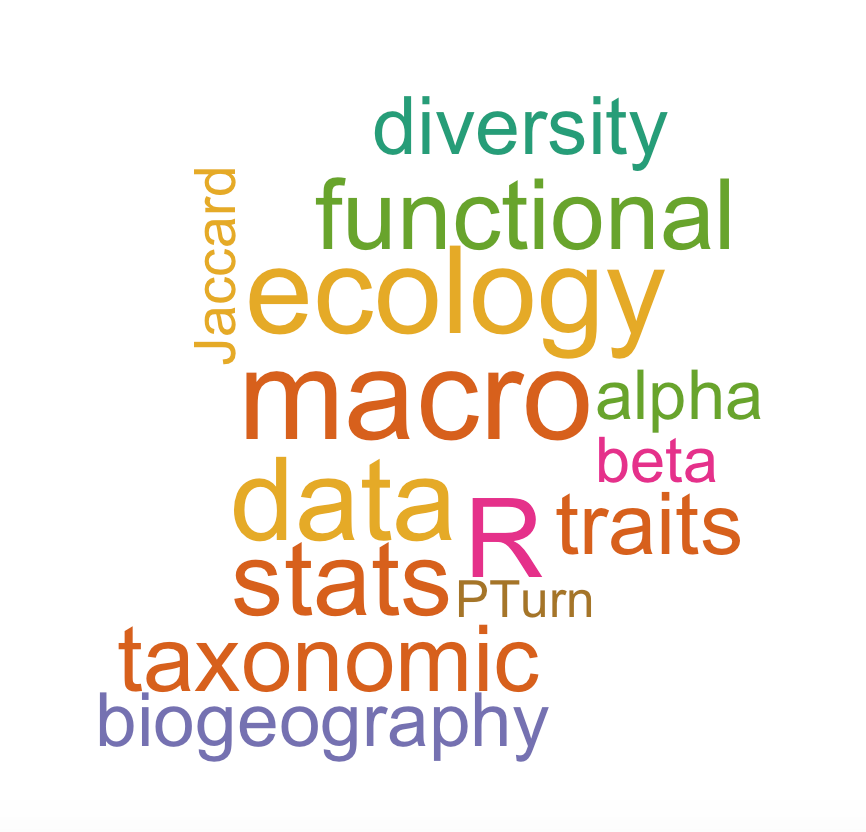

Centre de Recherche sur la Biodiversité et l'Environnement
UMR5300 — UPS · CNRS · IRD · INP
Université de Toulouse
Bât. 4R1, bureau 29
118 Route de Narbonne
31062 Toulouse, France Website
My research sits at the interface of macroecology, functional ecology, and
conservation biology, with a focus on understanding how the functional diversity
of vertebrates and plants is distributed across the globe, what processes
generate and maintain these patterns, and how anthropogenic pressures are
reshaping them.
A central theme of my work is the functional diversity of freshwater
fishes. During my PhD and subsequent projects, I built one of the
largest morphological trait databases for freshwater fishes, covering more than
9,000 species across more than 1,000 river basins worldwide. This work revealed
that functional diversity is highly concentrated in the Neotropics — which host
more than 75% of global functional diversity — and is only weakly correlated
with species richness at macroecological scales. I showed that the introduction
of non-native species has fundamentally restructured the functional composition
of fish assemblages worldwide, increasing functional diversity by up to 150% on
average while simultaneously driving taxonomic homogenization through the
dominance of a few widespread invasive species.
A second major axis of my research concerns the consequences of
biodiversity loss for functional diversity. I have demonstrated that
the extinction of threatened vertebrates will not lead to uniform losses of
functional diversity, but rather to idiosyncratic changes that vary
substantially across biogeographic realms and taxonomic groups. In birds, I
showed that non-native species will not compensate for the functional and
phylogenetic diversity lost following the extinction of threatened species,
highlighting the irreplaceable role of native biodiversity in sustaining
ecosystem functioning. This work contributed to a broader programme on the
erosion of functional diversity across the tree of life, which demonstrated
that extinction risk is non-randomly distributed in functional trait space
and that threatened species disproportionately occupy unique functional
positions.
More recently, I have been investigating intraspecific trait
variability as a neglected but critical component of functional
diversity. The INTRAIT project, supported by CEBA and TREMPLIN, aims to
quantify morphological variation within freshwater fish species in French
Guiana and to assess how ignoring this variability biases community-level
estimates of functional diversity. This work bridges individual-level
phenotypic variation and macroecological patterns, and is carried out in
close collaboration with master and PhD students at CRBE.
Across all these research axes, I employ a combination of large-scale
trait databases, multivariate statistics, and simulation approaches
implemented in R. I am particularly interested in methodological questions
surrounding the measurement and comparison of functional diversity indices,
and in developing reproducible analytical pipelines for handling large
biodiversity datasets. My work has been published in leading international
journals including Nature, Nature Communications,
Science Advances, Ecology Letters, and
Global Ecology and Biogeography.

Current grants
2025–2026 | INTRAIT — Influence of Intraspecific trait variability on the functional diversity of fish communities in French Guiana.
Supported by CEBAhere
and TREMPLINhere.
Previous grants
2020–2023 | Research Fellow — Estonian Research Council (PSG-505).
Details
2017–2019 | Post-doctoral Fellow — Estonian Research Council (MOBJD-276).
Details
Chen Z., Xu C., Brosse S., Toussaint A., Xu J., Su G.
Global Patterns and Determinants of Multiple Facets of Freshwater Fishes Beta Diversity.
Global Ecology and Biogeography.
PDF
Partel M., Tamme R., …, Toussaint A., …, Zobel M.
Global impoverishment of natural vegetation revealed by dark diversity.
Nature, 641, 917–924.
PDF ·
Press release CNRS ·
Actualité CRBE ·
EurekAlert
2024
Coulon N., Pilet S., Lizé A., Lacoue-Labarthe T., Sturbois A., Toussaint A., Feunteun E., Carpentier A.
Shark critical life stage vulnerability to monthly temperature variations under climate change.
Marine Environmental Research, 198, 106531.
PDF
Carmona C.P., Pärtel M., Tamme R., Toussaint A.
OTSIMAS ELURIKKUSE MÕÕTMEID LOOMADE JA TAIMEDE SEAST, MAA ALT JA MAA PEALT.
EESTI VABARIIGI PREEMIAD.
PDF
Tordoni E., Carmona C.P., Toussaint A., Tamme R., Pärtel M.
Global patterns and determinants of multiple facets of plant diversity.
Global Ecology and Biogeography, e13823.
PDF
Toussaint A., Pärtel M., Carmona C.P.
Contrasting impacts of non-native and threatened species on morphological, life-history, and phylogenetic diversity in bird assemblages.
Ecology Letters, 27, e14373.
PDF
2023
Toussaint A., Pärtel M., Carmona C.P.
Contrasting impacts of non-native and threatened species on morphological, life-history, and phylogenetic diversity in birds' assemblages.
Authorea.
PDF
Coulon N., Lindegren M., Goberville E., Toussaint A., Receveur A., Auber A.
Threatened fish species in the Northeast Atlantic are functionally rare.
Global Ecology and Biogeography, 1–19.
PDF
Bueno C.G., Toussaint A., Träger S. et al.
Reply to: The importance of trait selection in ecology.
Nature, 618, E31–E34.
PDF
Toussaint A., Pärtel M., Carmona C.P.
Non-native bird species will not compensate for the loss of phylogenetic and functional diversity after the extinction of threatened species.
Authorea.
PDF
de Tombeur F., Raven J.A., Toussaint A., Lambers H., Cooke J., Hartley S.E., Johnson S.N., Coq S., Katz O., Schaller J., Violle C.
Why do plants silicify?
Trends in Ecology and Evolution, 38(3), 275–288.
PDF
2022
Auber A., Waldock C., Maire A., Goberville E., Albouy C., Algar A.C., McLean M., Brind'Amour A., Green A.L., Tupper M., Vigliola L., Kaschner K., Kesner-Reyes K., Beger M., Tjiputra J., Toussaint A., Violle C., Mouquet N., Thuiller W., Mouillot D.
A functional vulnerability framework for biodiversity conservation.
Nature Communications, 13, 4774.
PDF
Paganeli B., Toussaint A., Bueno C.G., Fujinuma J., Reier Ü., Pärtel M.
Dark diversity at home describes the success of cross-continent tree invasions.
Diversity and Distributions, 28(6), 1202–1213.
PDF
Su G., Tedesco P.A., Toussaint A., Villeger S., Brosse S.
Contemporary environment and historical legacy explain functional diversity of freshwater fishes in the world rivers.
Global Ecology and Biogeography, 31, 700–713.
PDF
2021
Brosse S., Charpin N., Su G., Toussaint A., Herrera-R. G.A., Tedesco P.A., Villeger S.
FISHMORPH: A global database on morphological traits of freshwater fishes.
Global Ecology and Biogeography, 30(12), 2330–2336.
PDF
Carmona C.P., Bueno C.G., Toussaint A., Träger S., Diaz S., Moora M., Munson D.A., Pärtel M., Zobel M., Tamme R.
Fine-root traits in the global spectrum of plant form and function.
Nature, 597(7878), 683–687.
PDF
Toussaint A., Brosse S., Bueno C.G., Pärtel M., Tamme S., Carmona C.P.
Extinction of threatened vertebrates will lead to idiosyncratic changes in functional diversity across the world.
Nature Communications, 12(1), 1–12.
PDF
Tordoni E., Toussaint A., Pärtel M., Nogues-Bravo D., Carmona C.P.
Combining taxonomic, phylogenetic and functional diversity reveals new global priority areas for tetrapod conservation.
bioRxiv.
doi: 10.1101/2021.07.01.450689
Carmona C.P., Tamme R., Pärtel M., de Bello F., Brosse S., Capdevila P., Gonzalez-M R., Gonzalez-Suarez M., Salguero-Gomez R., Vasquez-Valderrama M., Toussaint A.
Erosion of global functional diversity across the tree of life.
Science Advances, 7(13), eabf2675.
PDF ·
Press release CNRS ·
EurekAlert!
2020
Carmona C.P., Tamme R., Partel M., de Bello F., Brosse S., Capdevila P., Gonzalez-M R., Gonzalez-Suarez M., Salguero-Gomez R., Vasquez-Valderrama M., Toussaint A.
Mapping extinction risk in the global functional spectra across the tree of life.
bioRxiv.
doi: 10.1101/2020.06.29.179143
Derezal O., Mondy P.C., Dembski S., Kreutzenberger K., Reyjol Y., Chanderis A., Valette L., Brosse S., Toussaint A., Beillard J., Merg M.L., Usseglio-Polatera P.
A diagnostic-based approach to assess specific risks of river degradation in a multiple pressure context: Insights from fish communities.
Science of The Total Environment, 734, 139467.
PDF
Toussaint A., Bueno C.G., Davison J., Moora M., Tedersoo L., Zobel M., Opik M., Partel M.
Asymmetric patterns of global diversity among plants and mycorrhizal fungi.
Journal of Vegetation Science, 31(2), 355–366.
PDF
2018
Toussaint A., Charpin N., Beauchard O., Grenouillet G., Oberdorff T., Tedesco P.A., Villéger S., Brosse S.
Non-native species led to marked shifts in functional diversity of the world freshwater fish faunas.
Ecology Letters, 21(11), 1649–1659.
PDF ·
Press release CNRS ·
Press release IRD ·
Blog post ·
Supplementary
Kuczynski L., Côte J., Toussaint A., Brosse S., Buisson L., Grenouillet G.
Spatial mismatch in morphological, ecological and phylogenetic diversity in historical and contemporary European freshwater fish faunas.
Ecography, 41, 1665–1674.
PDF
Tedersoo L., Laanisto L., Rahimlou S., Toussaint A., Hallikma T., Pärtel M.
Global database of plants with root-symbiotic nitrogen fixation: Nod DB.
Journal of Vegetation Science, 29(3), 560–568.
PDF
Toussaint A., Beauchard O., Oberdorff T., Brosse S., Villeger S.
Worldwide freshwater fish homogenization is driven by a few widespread non-native species.
Biological Invasions, 18, 1295–1304.
PDF
2015
Allard L., Toussaint A., Vigouroux R., Brosse S.
Length-weight relationship of 58 fish species in streams of French Guiana.
Journal of Applied Ichthyology, 31, 567–570.
PDF
2014
Toussaint A., Beauchard O., Oberdorff T., Brosse S., Villéger S.
Historical assemblage distinctiveness and the introduction of widespread non-native species explain worldwide changes in freshwater fish taxonomic dissimilarity.
Global Ecology and Biogeography, 23, 574–584.
PDF ·
Press release CNRS ·
Supplementary 1 ·
Supplementary 2
Student supervision
Adrien Lagalle.Master. 2026. Comparaison des méthodes de mesure des traits fonctionnels des poissons d'eau douce.
Anouk Schneider.Master. 2026. Quantification du biais utilisateur dans la mesure des traits morphologiques des poissons d'eau douce.
Laura Boutic.Bachelor. 2026. Quantification du biais utilisateur dans la mesure des traits morphologiques des poissons d'eau douce.
Joseph Crochez.Bachelor. 2026. Quantification du biais utilisateur dans la mesure des traits morphologiques des poissons d'eau douce.
Pierre Bertrand.Master. 2026. Quantification de la diversité intraspécifique des poissons d'eau douce de Guyane française et impact sur les mesures de diversité fonctionnelle.
Nell Pause.Master. 2025. Disentangling morphological, life-history, and dietary predictors of extinction risk and population trends in birds.
Pierre Bouchet.PhD Student. 2024–2027. Diversité fonctionnelle des vertébrés et utilisation par l'homme : liens entre traits fonctionnels, utilisation anthropique et crise de biodiversité.
Adrien Solacroup.Master. 2014. Characterization of the morphological intra-specific variability in the French Guyana and European freshwater fish community.
Communication
2025
France 3 Occitanie. Article sur la 'diversité fantôme'.
Link
Awards
2024
Estonian Research Award for research on the functional diversity of plants and vertebrates at global scale.
Key publications:
Science Advances and
Nature Communications.
Conferences
2024 — Annual meeting for macroecology of the Ecological Society of Germany, Austria and Switzerland, Marburg, Germany. Contrasting impacts of non-native and threatened species on morphological, life-history, and phylogenetic diversity in bird assemblages.
2023 — 19th International Symposium on River and Lake Environment (ISRLE 19), China. Mapping extinction risk in the global functional spectra across the tree of life.
2020 — Annual meeting for macroecology of the Ecological Society of Germany, Austria and Switzerland, Konstanz, Germany. Mapping extinction risk in the global functional spectra across the tree of life.
2018 — Annual meeting for macroecology of the Ecological Society of Germany, Austria and Switzerland, Birmendorf, Switzerland. Global mismatch between the species richness of vascular plants and symbiosis fungi.
2017 — 60th IAVS Annual Symposium, Palermo, Italy. Global mismatch between the species richness of vascular plants and symbiosis fungi across biogeographic realms.
2016 — 7th EAFES International Congress, Daegu, South Korea. Functional diversity and vulnerability of freshwater fish at the global scale.
2015 — 9th Symposium for European Freshwater Sciences, Geneva, Switzerland. Introductions of non-native freshwater fish affected differently the taxonomic and functional biodiversity facets.
2015 — 7th Biennial Conference of the International Biogeography Society, Bayreuth, Germany. Functional diversity of the freshwater fish fauna. (poster)
2013 — 8th Symposium for European Freshwater Sciences, Münster, Germany. Historical assemblage distinctiveness and the introduction of widespread non-native species explain worldwide changes in freshwater fish taxonomic dissimilarity.
Toussaint A. 2016. Diversité fonctionnelle des poissons d'eau douce à l'échelle mondiale : patrons, déterminants et impacts des activités humaines.
Université de Toulouse. 223p.
PDF (in French only)
Detailed thesis abstract
Biodiversity is often characterized only through its taxonomic facet, i.e. the number and list of species present in assemblages. However, recent studies show that biodiversity cannot be summarized by this facet alone, as it does not reflect the ecological characteristics of species. Several facets can describe biodiversity, including functional diversity, which considers the ecological traits of species and thus their role in ecosystem functioning. Yet, few studies have described this facet at large scales, its links with taxonomic diversity, or its responses to global change.
The objectives of this thesis were to (1) describe and understand the distribution of the functional diversity of freshwater fish assemblages at the global scale and (2) quantify the consequences of human activities on both taxonomic and functional biodiversity facets. To these ends, a morphological traits database was built for more than 9,000 freshwater fish species occurring in more than 1,000 river basins worldwide.
Results demonstrate that functional diversity is unequally distributed across the world and weakly related to taxonomic diversity at global scale. Species-rich Neotropical rivers host more than 75% of global functional diversity, whereas African or Asian rivers — also rich in species — host less than a quarter of world functional diversity. This pattern is explained by the functional uniqueness of certain Neotropical fish orders. The functional diversity of different biogeographic realms is also unequally vulnerable to extinction: Europe and North America could lose between 35% and 45% of their functional diversity, while the Neotropical realm appears less sensitive, with only 10% of its functional diversity supported by vulnerable species.
The introduction of non-native species has contributed to profoundly changing historical patterns of biodiversity, promoting taxonomic homogenization accompanied by a decrease in unique species in the poorest assemblages — largely driven by a few widely introduced non-native species. Non-native species have also contributed to increasing functional diversity of assemblages by 150% on average, up to seven times greater than the increase reported for taxonomic diversity (~20% on average). These results underscore the high sensitivity of functional diversity to changes in species composition and the need to account for it when assessing the impact of current and future human activities on freshwater biodiversity.